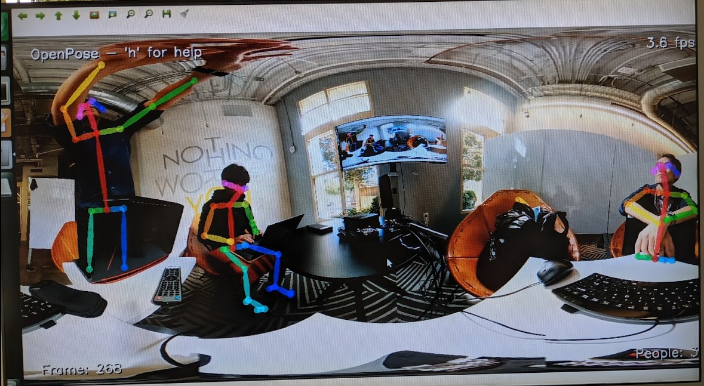

Robotics technology such as live streaming is moving into mainstream business. Be ready to win.
There's a huge increase in people building 360 applications with live streaming and API control. Building your own robot is a great way to learn how to use these technologies in your business strategy.
Jesse Casman
President of OppkeyRTSP Streaming From Your Own Robot
Stream 4K 360 video with 400ms to 1000ms latency.
Software and parts are fully explained in the meetup. Build your own robot for under $200 in parts (excluding cost of camera).
Easily build this demonstration with the RTSP plug-in on a THETA V or Z1. Extend the architecture by connecting the camera to a Jetson and using gstreamer or Janus WebRTC server to get the stream to another computer.
Learn more at the meetup
Advanced Camera Power Control - On, Off, Sleep, Wake
Remotely control camera on and off or build a touchscreen for your robot.
Use ssh or HTTP to connect to a Raspberry Pi or Nano and control the THETA power. You can also build an touchscreen interface for your camera.
Remote Power On Using ssh from Windows 10 control dashboard
Touchscreen controller connected to Raspberry Pi
Using official Raspberry Pi touchscreen and Flutter to build interface. The Raspberry Pi is connected to the THETA with a USB cable.
Learn more at the meetup
MotionJPEG Streaming
You can quickly test streaming from your robot with MotionJPEG.
In this demonstration, we use an SC2 for Business, which doesn't support streaming over a USB cable.
Learn more at the meetup
A Future Business Opportunity in 360 Live Streaming
Today, you can transmit live video in 360 degrees and video to provide a unique virtual experience for your customers and stakeholders.
Linux allows an easier way to use technologies like GStreamer to get the video stream to Video4Linux2-compliant applications.
Learn more at the meetup
Open Pose running on NVIDIA Jetson Nano

The output of the gst sample program can be used with the
v4l2loopback kernel module
to create V4L2 loopback devices
that appear on /dev/video1 or /dev/video2.
These devices can then be accessed by programs such as
OpenPose.
Learn more at the meetup
Building libuvc-theta and gstreamer sample program on Ubuntu 20.04 Focal Fossa.
- Grab the patched version of libuvc from GitHub.
- Clone libuvc-theta-sample from GitHub
- build and install libuvc. Make sure you build the patched branch.
- build the sample app
- Plug RICOH THETA into Linux USB port. Put into live mode with the mode button on the side of the camera or with the USB API for StillCaptureMode which you need to set to Live streaming with value 0x8005.
Learn more at the meetup